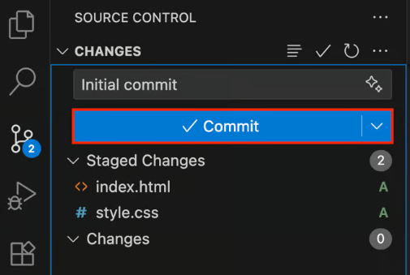
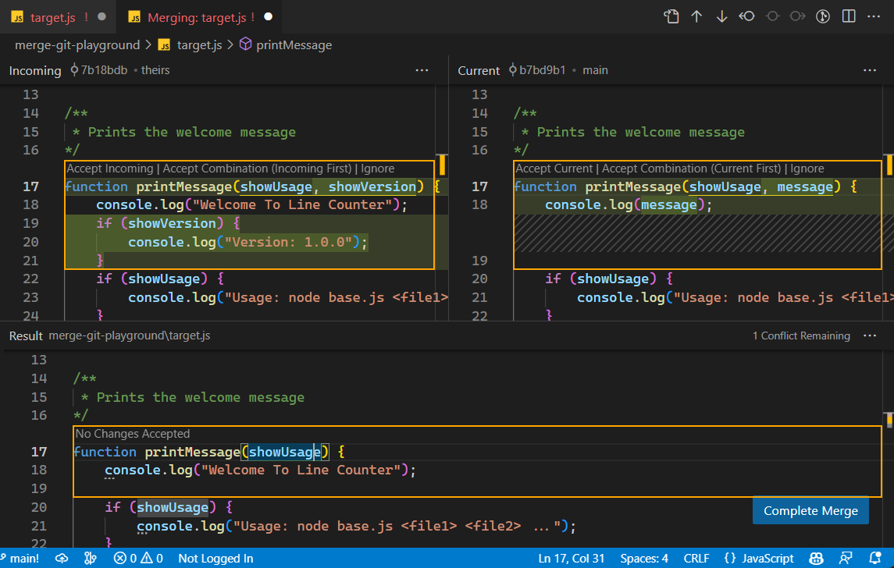

(1U) Hovedbudskaberne for sidste lektion
Video 1 - Tech with Diego
- Hvad er formålet med at bruge Git og GitHub?
- Hvis I laver en ændring i jeres kode som skaber en fejl og derefter bruger timer på at fikse fejlen og så ikke længere kan trykke "undo".
- Hvis I vil afprøve nye features så behøver I ikke at gemme forskellige versioner af programmet.
- Man kan samarbejde uden at skulle sende filer til hinanden.
game.js
game_old.js
game_old2.js
game_final.js
game_final2.js
game_final_FINAL.js
Video 2 - Visual Studio Code
- Hvordan man kan bruge VS Code's integrerede source control interface som hjælp til git.
- Mere information om Git i VS Code (inklusiv merge-konflikter): https://code.visualstudio.com/docs/sourcecontrol/overview

Intentionel merge konflikt
- Vi nåede ikke så meget mere end det som var lektier til sidste gang.
- Budskab: I skal ikke ændre i samme linje kode som andre der samarbejder med jer over git.

(1Ø) Lektie - Fork og clone et projekt
Fork og clone repo fra GitHub
- Gå ind på følgende GitHub repository:
- Følg denne guide for at forke repository'et og clone det til jeres computer, men stop før afsnittet "Configuring Git to sync your fork with the upstream repository":
Lav en feature-branch i det klonede projekt
BEMÆRK: Hvis jeres "main"-branch hedder master i stedet så skriv master i stedet for main i alle git kommandoer nedenfor.
- Lav en ny branch:
git switch -c deflating-sun - Lav ændringer i koden så solen punkterer når man klikker på den, og først derefter skal den falde ned. Følg disse trin:
- Stop solen når der trykkes på den: Gør hastigheden til 0.
- Lav en property på variablen sun med navnet
isDeflatingder er falsk i starten, og gør den sand når der trykkes på den:sun.isDeflating = true. - Gør diameteren mindre med en konstant hastighed når
sun.isDeflatinger sand. - Stop når diameteren blive mindre end en bestemt værdi, prøv 40 pixel.
- Få solen til at falde ned i frit fald (som før) når diameteren har nået den bestemte værdi.
- Når alt fungerer så commit jeres ændringer.
- Derefter pusher I til GitHub:
git push -u origin deflating-sun. - Derefter så merge jeres branch ind i
mainigen:git switch mainog til sidstgit merge deflating-sun.
(1Ø) Evaluering
Flere små øvelser
- Jeg har hørt jeres efterspørgsel og vil forsøge at give jer flere små og lette øvelser med en tydelig fremgangsmåde.
- Jeg vil lave dem lidt på samme måde som opgaverne til Git og Github, og især "Fork og clone et projekt".
Flere projekter
- Projekterne kommer stille og roligt, så jeg håber I vil være tålmodige og se det som vi gennemgår nu som forberedelse til projekterne.
- Planen har været at I skal rystes lidt og få et overblik over værktøjerne og sværhedsgraden, og derefter tager vi det i et mere roligt tempo og får styr på værktøjerne og programmeringssproget ved at lave nogle projekter.
I har svært ved at fokusere i fremlæggelserne og lære programmeringssproget
- Der var ikke nok øvelser hvor I kunne arbejde med programmeringssproget.
- Det var ikke meningen at I skulle have helt styr på programmeringssproget endnu, blot en smule omkring variabler, betingelser, løkker og objekter. Mestringen kommer i projekterne.
- Jeg skulle også lige finde jeres niveau, siden at I allerede har haft programmering i et år, men jeg tror det vil blive lettere når vi kommer igang med første projekt.
(2U) Software Development Life Cycle (SDLC) - Del 1
1. Planlægning og analyse
- Hvilket problem skal vi løse og hvordan kunne det løses?
- Problemformulering, problemanalyse, identificering af begrænsninger og eksisterende løsninger.
- Metoder: Interessentanalyse, konkurrentanalyse, brainstorm af funktionaliteter, etc.
2. Kravspecifikation
- Hvad er kravene for programmet så det løser problemet?
- Valg og prioritering af features og funktionaliteter.
- Metoder: MoSCoW, MVP, etc.
3. Design
- Hvordan strukturerer og designer vi programmet så det opfylder kravene?
- Design af systemarkitektur, brugergrænseflade, interaktioner
- Metoder: Use cases, flow diagrammer, klassediagrammer, datastrukturer, pseudokode, etc.
Læs mere: https://www.geeksforgeeks.org/software-engineering/software-development-life-cycle-sdlc/
(2U) Software Development Life Cycle (SDLC) - Del 2
4. Implementering
- Byg og dokumentér det program vi har designet.
- Først her begynder man at programmere. Programmet bliver løbende dokumenteret, for at andre (og en selv) kan forstå de forskellige dele.
- Bemærk: Her laves også enhedstest, selvom test-fasen først er næste fase.
5. Test
- Løser programmet problemet?
- Test programmet som helhed, om der er nogen bugs, glitches, uforudsete hændelser. Afprøv alle muligheder, selv noget som man ikke forventer at brugeren gør.
- Metoder: Alpha og beta test, brugertest, etc.
6. Udrulning (Deployment)
- Lancér programmet så brugerne kan bruge det og problemet løses.
- Sørg for at der ikke er sensitive informationer i koden, og indpak alle de relevante filer i det rette format (eksempelvis en executable eller en zip-fil).
- Sørg for at der er den nødvendige dokumentation for at kunne bruge programmet.
7. Opretholdelse (Maintenance)
- Oprethold programmet så det bliver ved med at fungere, og support brugerne så problemet fortsat løses.
- Rettelse af fejl, levering af opdateringer, support i at bruge programmet, overvåg ydeevnen.
Læs mere: https://www.geeksforgeeks.org/software-engineering/software-development-life-cycle-sdlc/
(2U) SDLC Modeller

(2Ø) Problemformulering og Interessentanalyse
Problemformulering
- Vores (fiktive) problem: "Anne Vedersø vil gerne have udviklet et online Tower Defence-spil til eleverne på FG og folkeskoleelever i Frederikssund og omegn, så de kan se hvad man kan lære i programmering B på FG for højere antal ansøgningere, og det skal lanceres søndag før efterårsferien."
Interessentanalyse
- Undersøg hvad kunden, brugerne og andre interessenter behøver og ønsker.
- Interessenter:
- Kunde: Anne Vedersø.
- Projektleder: Andreas.
- Softwareudviklingerne: Jer.
- Brugere: Eleverne på FG og folkeskoleelever i Frederikssund og omegn.
- Andre?
- Hvad er Interessenternes ønsker og behov? Fælles markdown dokument.

(2Ø) Begrænsninger og Planlægning
Begrænsninger
- Tid: 5 uger (minus uge 38). 9 moduler inklusiv i dag
- Ressourcer: SU (for jeres lønninger) og hjernekraft.
- Tekniske værktøjer: Javascript, p5.js, VS Code, Git og Github.
Plan
- Teams: 3 teams der udvikler et MVP parallelt. Vi tager det bedste fra hvert program og kombinerer det til ét program.
- Denne lektion: Planlægning, kravspecifikation og lidt design.
- Næste lektion: Design fortsat.
- Næste uge (1 lektion): AI-genereret prototype.
- Uge 38: Aktivitetsuge (ikke normal undervisning).
- Uge 39: Implementering.
- Uge 40: Test og udrulning. Inklusiv dokumentation (aflevér synopsis).
- Uge 41: Fremlæggelse og feedback (mini-prøve).
- Uge 42: Efterårsferie.
(2Ø) Analyse
Konkurrentanalyse
- Hvilke løsninger eksisterer allerede, hvad kan vi tage fra dem og hvordan kan vi lave noget bedre?
-
Eksempler:
- Bloons tower defence
- Plants vs zombies
- Vector td
- Bubble tanks td
- Dungeon defenders
- Onslaught 2
Feature brainstorm
- Fælles markdown dokument
features.md
(2Ø) Kravspecifikation
MoSCoW
- Must have, Should have, Could have, Won't have.
Definér Minimum Viable Product (MVP)
- Hvad gør et spil til et Tower defence-spil?
- Formål: Test programmet og se hvad der virker så man bedre kan planlægge og udbygge næste iteration.
(P) Pause
Vi starter igen
(3U) Opstart af design-fasen
Design-fasen
- Hvordan strukturerer og designer vi programmet så det opfylder kravene?
- Design af systemarkitektur, brugergrænseflade, interaktioner
- Metoder: Use cases, flow diagrammer, klassediagrammer, datastrukturer, pseudokode, etc.
(3Ø) Øvelser til design-fasen
Struktur
- Lav en mappe
fg-tower-defencemed p5.js - Lav en markdown-fil
structure.mdog opskriv en fil-struktur til de forskellige objekter.
Use cases
- Lav use cases til alle interaktioner i jeres MVP.
- Lav en ny markdown fil
use_cases.md. - Eksempel:
-
- Spilleren vælger et tower.
- Systemet viser towerets pris.
- Spilleren vælger en position på banen.
- Systemet kontrollerer, om positionen er gyldig.
- Systemet kontrollerer, om spilleren har nok coins.
- Systemet placerer toweret.
- Systemet trækker towerets pris fra spillerens coins.
Algoritmer
- Skriv pseudokode til de algoritmer/trin som programmet går igennem for at udføre de forskellige funktionaliteter.
- Eksempler: Tower skyder en fjende, Fjende bevæger sig på banen, etc.
(4U) Lektier
Analyse
- Spil nogle tower defence spil og skriv ned hvilke features de har som I ikke har tilføjet til
features.md.
Video
- Se første video (eller flere) i denne playliste om design af Tower Defence-spil: https://www.youtube.com/watch?v=DL4tiI53IW4&list=PL-eCFrNZ9nlImCM7CdPpby8Ee2fVErVQO
Design
- Tegn hvordan spillet skal se ud (design layout).
(4U) Næste lektion
Fortsættelse af Softwareudviklingsprocessen
- Vi fortsætter design-fasen for Tower Defence-spillet.
(5Ø) Lektionen er slut
Læg en plan for hvornår I vil lave lektierne og sæt en påmindelse
... reflektér over det I har lært og saml jeres tanker
... I kan gå når I vil.
Program
| Punkt * | Start + varighed | Aktivitet | Indhold |
|---|---|---|---|
| 1U | 12:05 + 10 | Opsamling fra sidst | Kort opsummering og hovedbudskaberne af sidste lektion. |
| 1Ø | 12:15 + 20 | Gennemgang af lektier til i dag | Eventuelle spørgsmål om indholdet i sidste lektion, samt gennemgang af de projekter som I har fundet. |
| 2U | 12:35 + 10 | Softwareudviklingsprocessen | Introduktion de forskellige trin i udviklingsprocessen. |
| 2Ø | 12:45 + 55 | Planlægning og kravspecification af Tower Defence-spillet | Vi udfører i fællesskab trin 1 og 2 i udviklingsprocessen for at fastlægge kravene til spillet og. |
| P | 13:40 + 10 | Pause inden næste modul | |
| 3U | 13:50 + 10 | Opstart af øvelser til design-fasen | Jeg sætter jer igang med de øvelser som I skal lave i design-fasen. |
| 3Ø | 14:00 + 75 | Design af Tower Defence-spillet | I skal fortsætte med at designe spillet og vælge hvordan koden skal struktureres. |
| 4U | 15:15 + 5 | Opsamling, lektier og næste lektion | Hjemmearbejde til næste gang og emnerne for næste lektion. |
| 4Ø | 15:20 + 5 | Afrunding | Færdiggør jeres arbejde og reflektér over jeres læring. |
* (U=Undervisning, Ø=Øvelse)